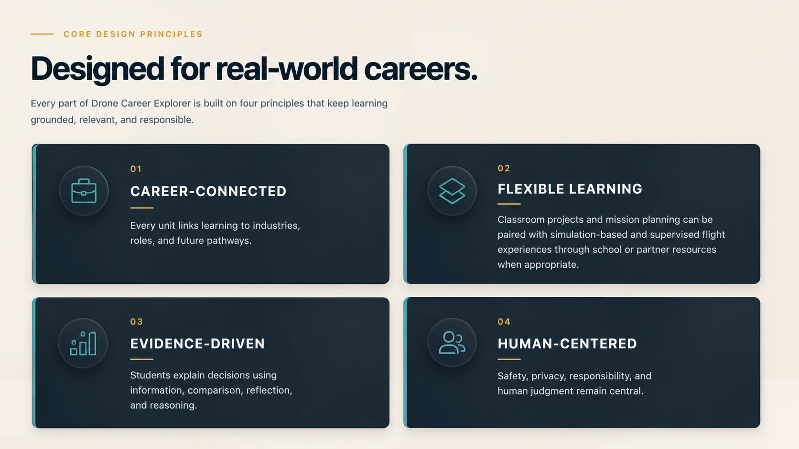

Full Pathway
Teach the grade-band sequence from orientation through portfolio and capstone.
Semester / extended sequenceDrone Career Explorer connects education, emerging technology, and career readiness through a progressive learning pathway for middle school students, high school students, educators, and future drone-industry professionals.
Students move from exploration to applied problem solving, while professional learners examine the organizational systems behind emerging BVLOS operations.
Build systems thinking, responsible-use habits, sensor and data awareness, mission-planning foundations, and career curiosity.
Analyze mission planning, AI and sensors, aerial evidence, industry workflows, logistics, and workforce readiness.
Examine current operating pathways, proposed BVLOS standards, organizational accountability, safety systems, automation oversight, data services, security, and change control.
For learners ready to move from career exploration into commercial UAS knowledge, the Part 107 pathway connects aviation regulations, airspace, weather, decision-making, maintenance, airport operations, and safe mission planning to the FAA Remote Pilot Certificate process.
Knowledge preparation only. The FAA issues the Remote Pilot Certificate; eligibility and testing requirements apply.The public site shows authentic curriculum structure and selected student-facing evidence, while educator implementation resources are provided through approved partnerships.

Schools and programs can use the complete grade-band pathway, selected modules, or focused pilots. Classroom learning can be paired with simulator-based experiences and supervised flight activities through school or partner resources where appropriate.
Teach the grade-band sequence from orientation through portfolio and capstone.
Semester / extended sequenceUse individual units for STEM, CTE, technology, career exploration, or interdisciplinary integration.
Targeted learningUse curated lessons, cases, and career challenges for summer, enrichment, or pilot experiences.
Short implementationDrone Career Explorer sits between K–12 AI learning and the professional UAS workforce. These connected destinations help educators, learners, and partners explore the part of the ecosystem that fits their goals.